Convention/Grammar
Today, we explored many exciting words together. We learned about:
Remember, words are like magic keys. They help us talk about the world around us and tell amazing stories. Every new word you learn opens a door to new ideas and adventures.
| Word | Pictures | Meaning |
|---|---|---|
| Doctor: | A doctor is a person who makes sure we're healthy. | |
| Chef: | 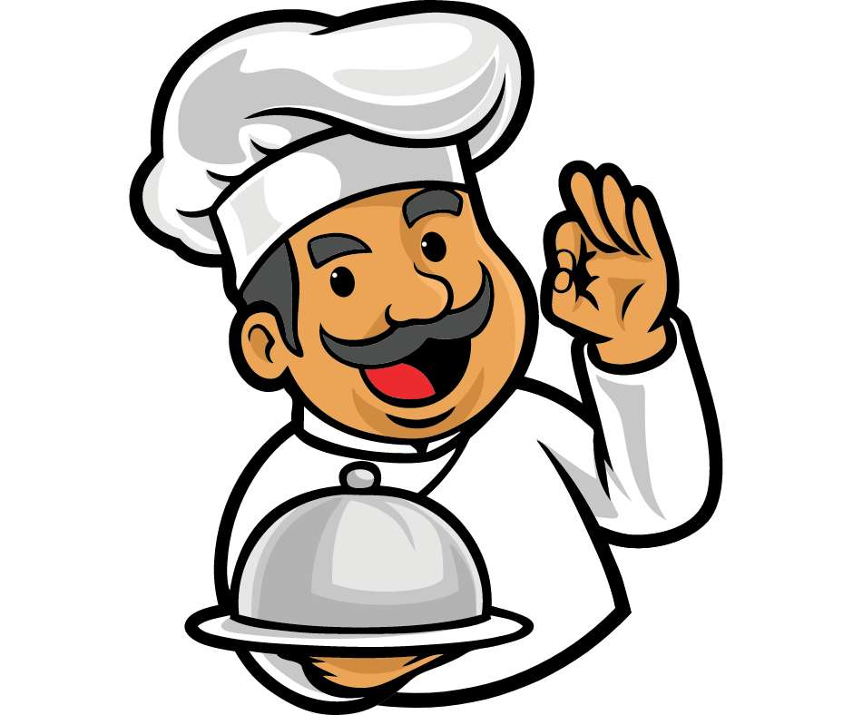 | A chef is a person who cooks good food. |
| Farmer: | 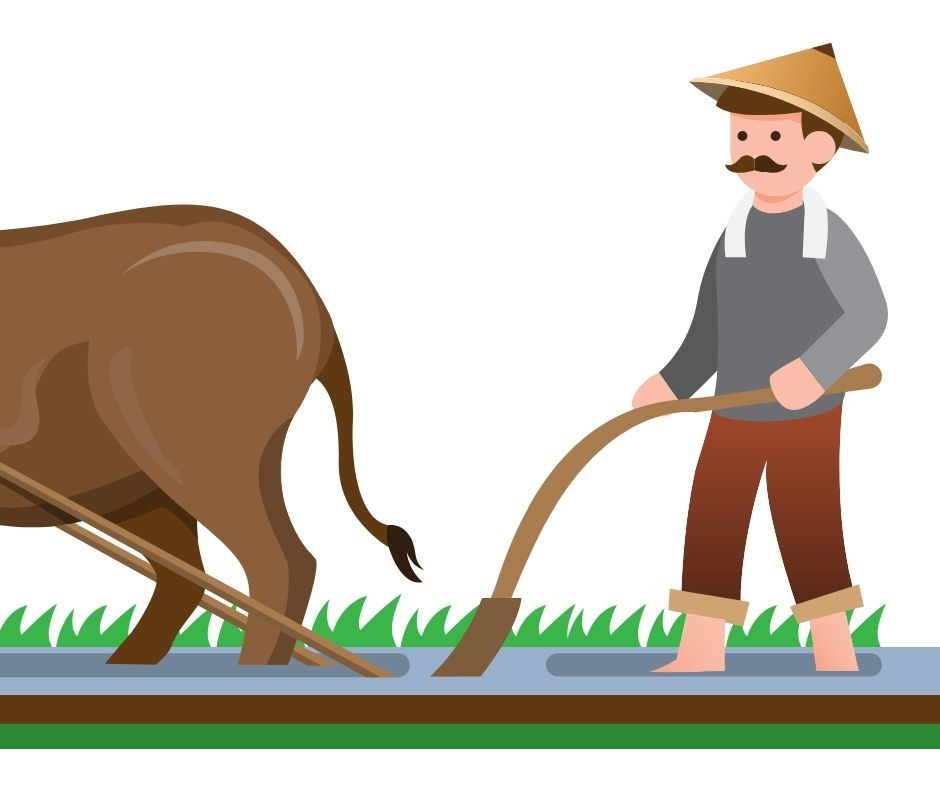 | A farmer grows food on land. |
| Teacher: | 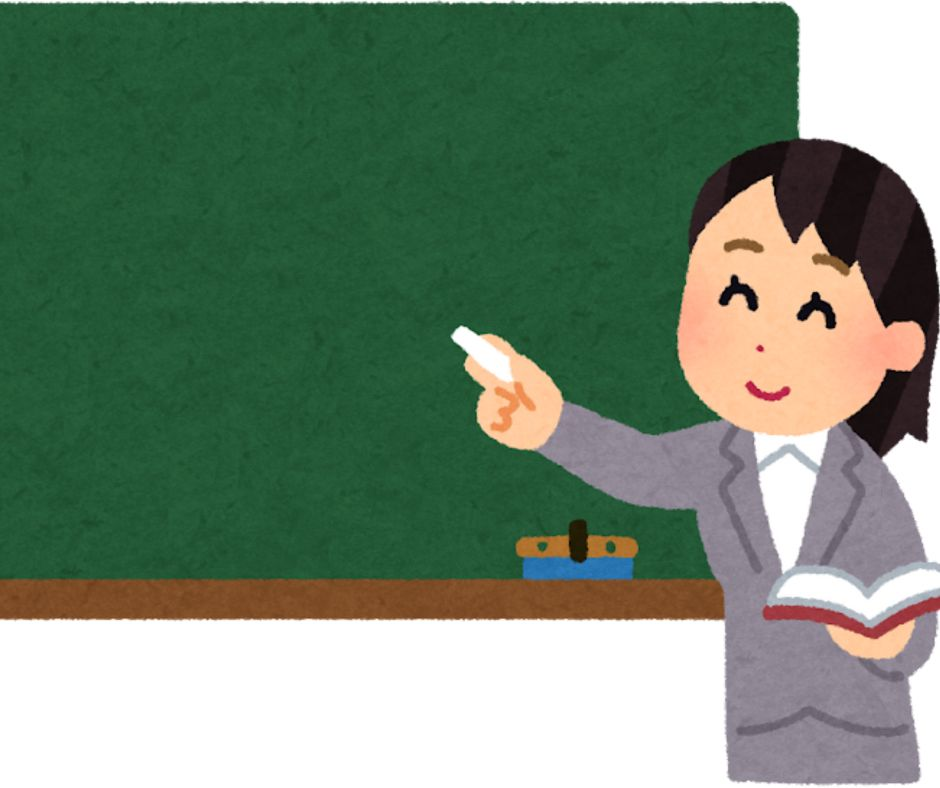 | Teachers are like knowledge superheroes, they help students learn new things. |
| Police Officers : | 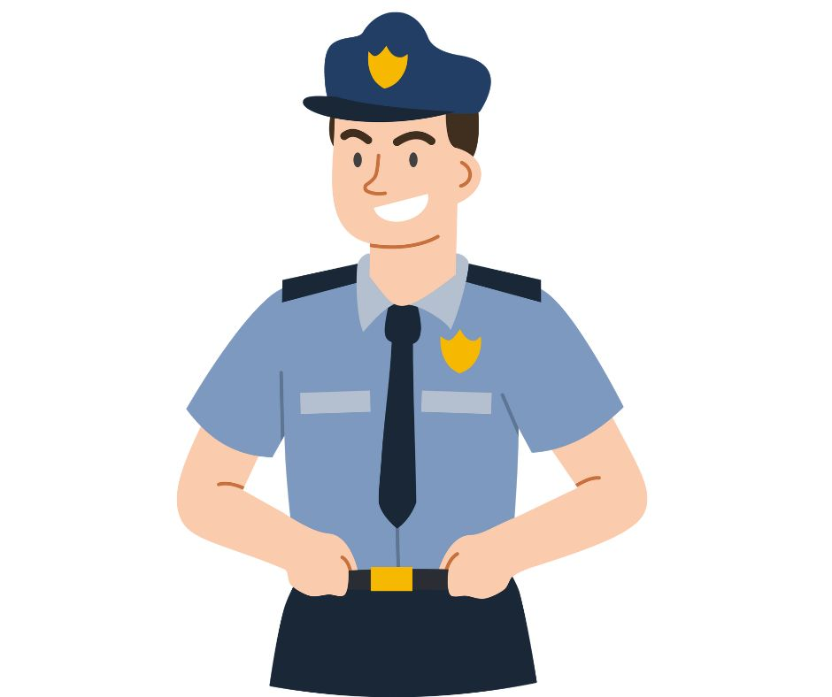 | Police officers are like real-life safety guardians. They stop crime. |
| Laughed: | 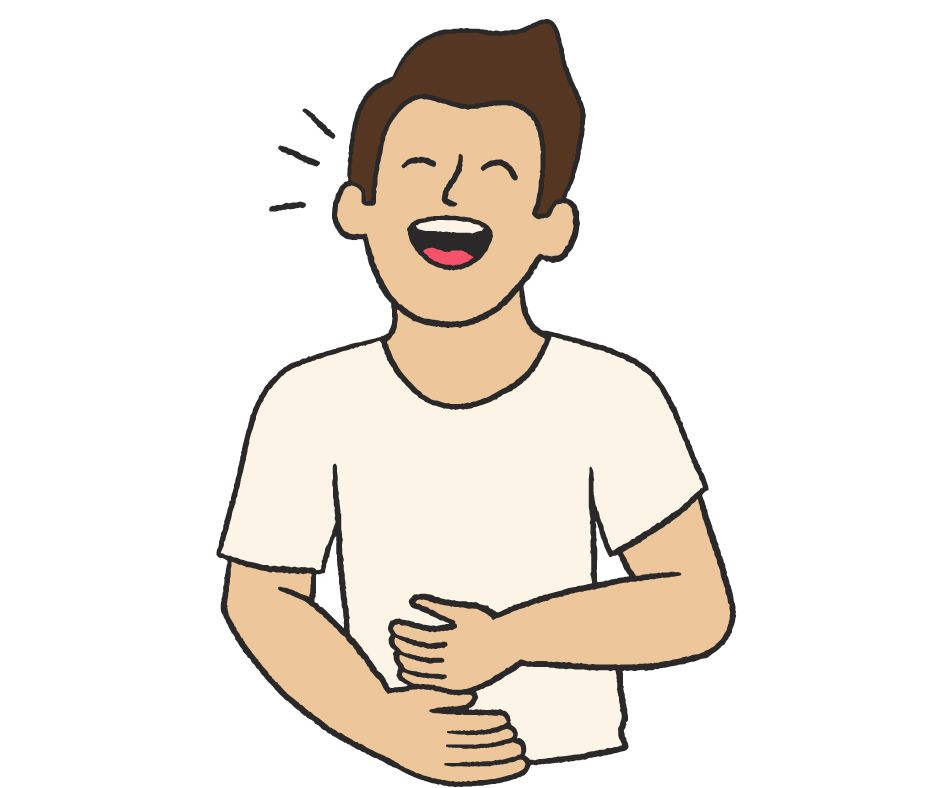 | When you laugh, you make happy sounds because something is funny. |
| Chase: | 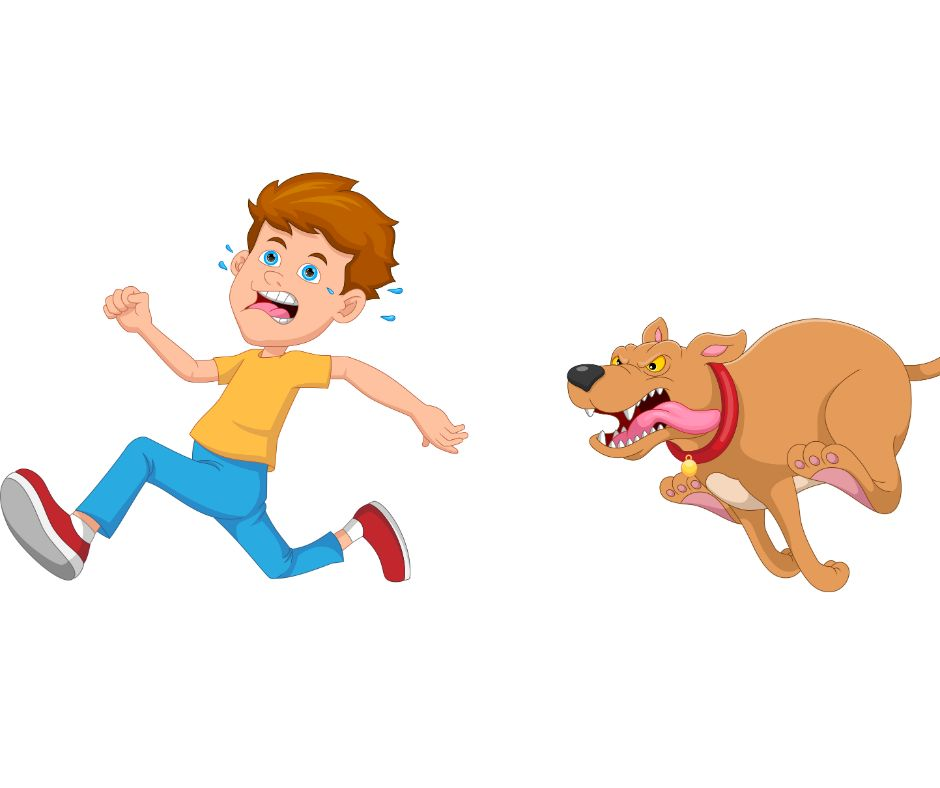 | Chasing is when you run after something or someone. |
| Tractor: | 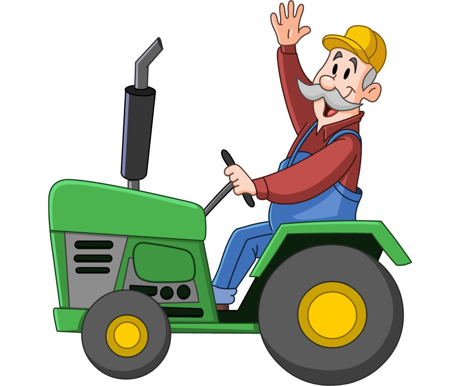 | A tractor is a big machine farmers use. |
| Scarf: | 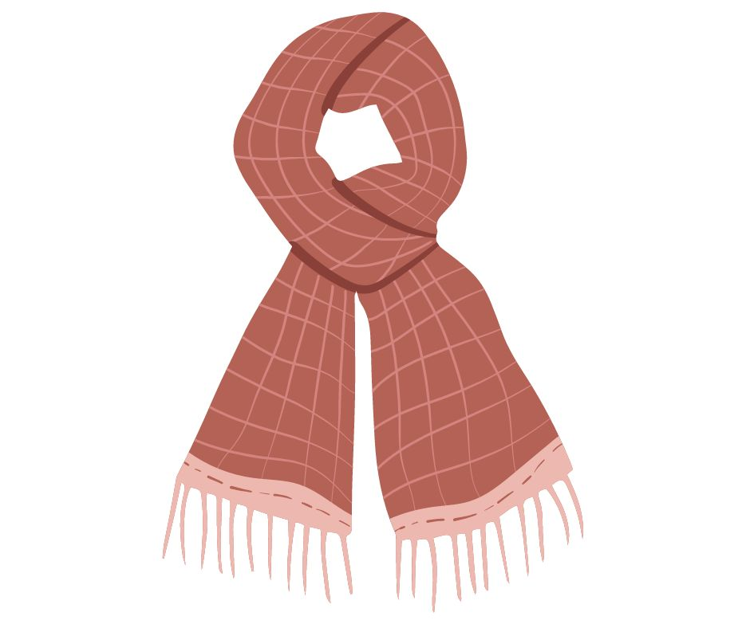 | A scarf is something you wear around your neck to keep warm. |
| Sparkle: | Sparkle means to shine with little flashes of light. | |
| Giggle: | 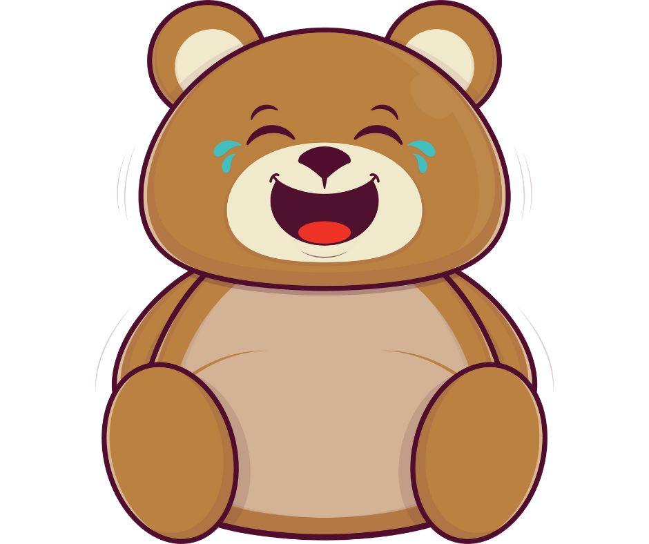 | A giggle is a small, happy laugh. |
| Bubble: | 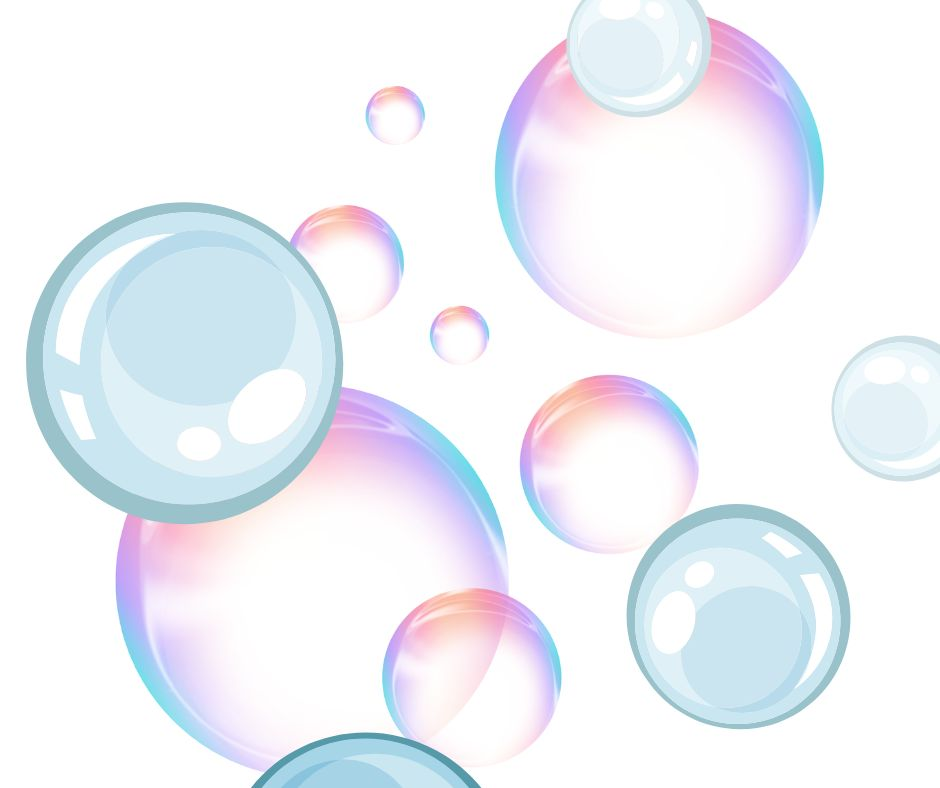 | A bubble is a floating ball of air wrapped in soap. |
| Bounce: | 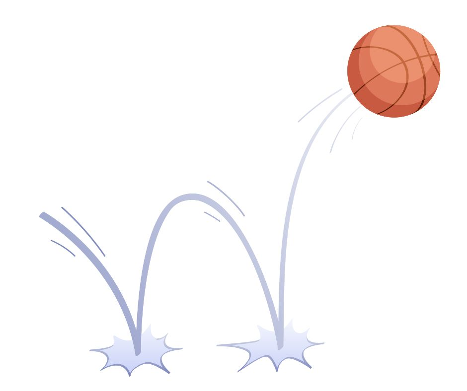 | To bounce means to spring up when you hit the ground. |
Other words that I learnt from the story
Licking: Using your tongue to touch something.
Sentence: The puppy is licking my hand.
Busy: Doing a lot of things and having no time to stop.
Sentence: Mom is busy cooking dinner.
Suddenly: Happening quickly without warning.
Sentence: Suddenly, the cat jumped off the table.